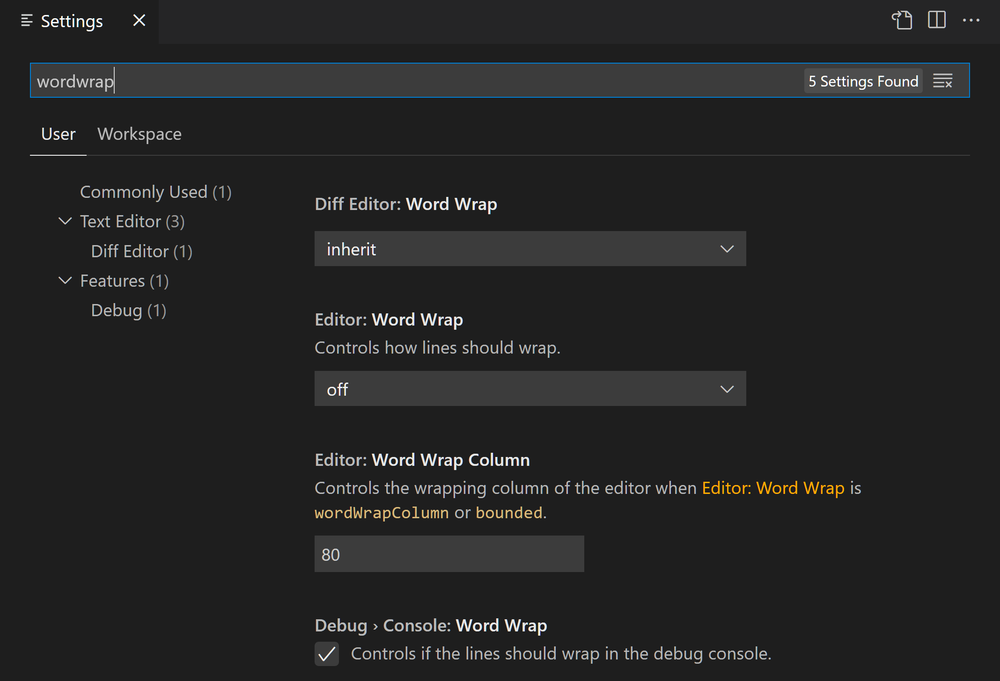

Settings editor
When you open the settings editor, you can search and discover settings you are looking for. When you
search using the Search bar, it will not only show and highlight the settings matching your
criteria,
but also filter out those which are not matching. This makes finding settings quick and easy.

VS Code extensions can also add their own custom settings and they will be visible under an
Extensions
section.
Language-specific editor settings
To customize your editor by language, run the global command Preferences: Configure Language Specific
Settings from the Command Palette (Ctrl+Shift+P) which opens the language picker. Select the
language you want, which then opens your user settings.json with the language entry where you can
add applicable settings.

Select the language via the dropdown:

Add language-specific settings to your user settings:

If you have a file open and you want to customize the editor for this file type, select the Language
Mode in the Status Bar to the bottom-right of the VS Code window. This opens the Language Mode
picker with an option Configure 'language_name' language based settings. Selecting this opens your
user settings.json with the language entry where you can add applicable settings.
Language-specific editor settings in your user settings override workspace settings.
You can scope language-specific settings to the workspace by placing them in the workspace settings
just like other settings. If you have settings defined for a language in both user and workspace
scopes, then they are merged by giving precedence to the ones defined in the workspace.
The following examples customize editor settings for language modes typescript and markdown.
{
"[typescript]": {
"editor.formatOnSave": true,
"editor.formatOnPaste": true
},
"[markdown]": {
"editor.formatOnSave": true,
"editor.wordWrap": "on",
"editor.renderWhitespace": "all",
"editor.acceptSuggestionOnEnter": "off"
}
}
You can use IntelliSense in settings.json to help you find allowed language-based settings. All editor
settings and some non-editor settings are supported. Some languages have default language-specific
settings already set, which you can review in defaultSettings.json opened with the Preferences: Open
Default Settings command.